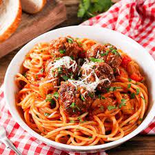
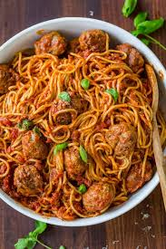
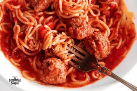
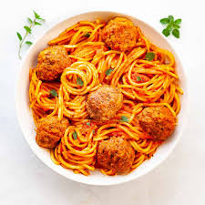

Spagehetti and Meatballs






Ingredients
- 1lbSpaghetti
- 1lbGround beef
- 1/3 c.Bread crumbs
- 1/4 c.Finely chopped parsley
- 1/4 c.Freshly grated Parmesan,plus more for serving
- 1Large egg
- 2Garlic cloves, minced Kosher salt
- 1/2 tspRed pepper flakes
- 2 tbspExtra-virgin olive oil
- 1/2 c.Onion, finely chopped
- 1 (28-oz)Can crushed tomatoes
- 1Bay leaf
- Freshly ground black pepper
How to Prepare
- Step 1
In a large pot of salted boiling water, cook pasta until al dente. Drain
- Step 2
In a large bowl, combine beef with bread crumbs, parsely, parmesan, egg, garlic, 1 teaspoon salt, and red pepper flakes. Mix until just combined then form into 16 balls.
- Step 3
In a large pot over medium heat, heat oil. Add meatballs and cook, turning occasionally, until browned on all sides, about 10minutes. Transfer meatballs to a plate.
- Step 4
Add onion to pot and cook until soft, 5 minutes. Add crushed tomatoes and bay leaf. season with salt and pepper and bring to a simmer. Return meatballs to pot and cover. Simmer until sauce has thickened, 8 to 10 minutes.
- Step 5
Serve pasta with a healthy scoop of meatballs and sauce. Top with Parmesan before serving.
| Ingredients | Measurements |
|---|---|
| Spaghetti | 1lb |
| Ground beef | 1lb |
| Bread crumbs | 1/3c. |
| Finely chopped parsley | 1/4c. |
| Freshly grated Parmesan, plus more for serving | 1/4c. |
| Large egg | 1 |
| Garlic cloves, minced Kosher salt | 2 |
| Red pepper flakes | 1/2 tsp |
| Extra-virgin olive oil | 2 tbsp |
| Onion, finely chopped | 1/2c. |
| Can crushed tomatoes | 1 (28-oz) |
| Bay leaf | 1 |
| Freshly grounf black pepper |